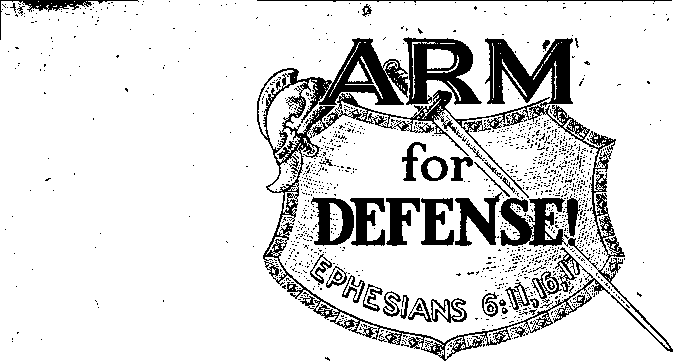

TR ANS MUTATION
Fission
Structure of various atoms, including Uranium,‘and clarifying what occurs at the time of fission and the release of atomic energy

Atomic Weight and Atomic Number
Nuelear Fission and Atomic Energy
“Thy Word Is Truth”
Cubans Rejoice in Theocratic Assemblies
Assembly Begins on Note of Gladness
Divine Appointment in Scriptures
La Prensa, the Wealthiest Paper
Long Journeys and Many of Them
Published every other Wednesday by watchtower bible AND TRACT SOCIETY, INC. 117 Adams St., Brooklyn 1. N. Y„ U. S. A*
. OFFICERS
President N,_H. Knorr
Secretary W. El. Van Amburgh
Editor Clayton J, Woodworth
Five Cent* a Copy
$1 a year in the United States $1.25 to Canada and ail other countries
NOTICE TrQ SUBSCRIBERS Remittances: For your own safety, remit by postal note or by postal or express money order or by bank draft. When coin or currency is lost In the ordinary mails, there is no redress. Remittances from countries other than those named below may be made to the Brooklyn office, but only by International postal money order. Receipt of a new or renewal subscription will be ac* knowledged only when requested. Notice of Expiration is sentwlth the journal one month before subscription expires. Please renew promptly to avoid Joss of copies^ Send change of address direct to us rather than to the post office. Your request should reach us at least three weeks before the date of issue with which it is to take effect Send your old as. well as the new address. Copies will not be forwarded by the post office to your new address unless extra postage is provided by you. Published also in German, Greek, Portuguese, Spanish and Ukrainian,
OFFICES FOR OTHER COUNTRIES
Australia Canada England India Newfoundland New Zealand Philippine Islands South Africa
7 Beresford Rd., StrathfleJd. N. S. W.
40 Irwin Ave.. Toronto 6, Ontario
84 Craven Terrace, London, W. 2 IB? Love Lane, Bombay 27
P. O. Box 521, St. John's
177 Daniell St., Wellington, S. 1 1219’B Orocuteta St., Manila . 623 Boston House. Cape Town
Entered as second * claims matter at Brooklyn, N. Y.» under the Act of March 3. 1879.
In Brief
Discrimination Against Jehovah’s witness
♦ When a man has sold ■his time to an earthly employer, that time belongs to the employer and should 'be conscientiously used to do the work for which he is hired. On the other hand, it is none of an employer’s business what a man believes, so long as he discharges honestly, faithfully and industriously • the duties of the job he was hired to fill.
These reflections are suggested by a letter from one of Jehovah’s witnesses residing in the; state of Washington. He had a job as night watchman in a mining plant, but because he was known to be one of Jehovah’s witnesses he was fired at three o’clock in the morning by the chief night watchman, with some unpleasant reflections upon the fact that le was one of Jehovah’s witnesses. In a brief time the chief night watchman lost lis eyesight and had to give up his work.
The witness got another job with the same company, this time in the arsenic plant. The employment agent knew that he had been with the concern sixteen years, and had done good work, and also knew that he is one of Jehovah’s witnesses and hated him for it, but the plant : needed men, and as this was the most dangerous and disagreeable job in the plant, and nobody wanted it, he put him to work at it. After a little, the employment agent died in his sleep.
The witness stuck it out in the arsenic department eighteen months and then took sick. The company doctor knew that he is one of J ehovah’s witnesses, and so, though the sick man’s temperature was 101 and his blood pressure was 200, he told him to get up and go back to work, and that without any examination, and without regard to the fact that for almost eighteen years the witness had been paying $1 .'25 monthly into the sick benefit fund. In a few weeks the doctor took sick and suicided by jumping out of a window.
“And in His name shall the nations hope.”—Matthew 12:21, A. 5. V.
Volume XXVII Brooklyn, N.Y., Wednesday, June 5, 1946 Number 697
A TOMIC energy,” what arresting A words these have become during the eventful year of 1945! This subject has captivated the minds of millions of people the world over. Scarcely a day passes by without some newspaper article or some radio commentator bringing the subject prominently to the fore. Diplomats, statesmen, and legislators in all countries plainly are no little perturbed at the consequences that might result should some aggressor nation unleash the fury of this Gargantuan monster upon an erstwhile allied nation. Why this sudden awakening of interest in a subject that admittedly is of a highly technical nature and that formerly was evaded as of no particular interest save to a few specialists who were solely devoted to the study of atomic physics ? Is it due only to the innate fear of sudden annihilation by some enemy having advance information on the control of atomic energy, or are there other reasons less foreboding? An examination of this subject from the technical aspect should be of interest to all people who desire to understand the modus operands of some of the natural forces with which the Creator has endowed this earth.
Responsible men who are well versed in atomic physics freely predict that the world is entering the so-called “atomic age”. This they say began with the discovery of nuclear fission and its concomitant release of the energy which is confined to the interior structure, of atoms. The day whereinthe primary sources of power such as coal,, gas, and petroleum, together with their various by-products,
is certain to pass away from before the oncoming of this highly efficient giant. This will require time, true, but come it will, say they. What is the basis for such predictions being made so confidently? Is it a mere fantasy, or an idle dream of some long-haired fanatic? If atomic energy possesses such potent possibilities, wherein lies the source of this energy, and why should the use thereof be so very much more efficient than that of the common combustion of coal, for instance? That the predictions of these men cannot be passed by as being fanciful speculation is amply attested to by the development of the atomic bomb and its resultant devastating power.
feeing that a knowledge of how atomic energy can be released may be of fundamental importance in human affairs, let us proceed to investigate some of the hypotheses upon which . this aweinspiring discovery is based. While these hypotheses are largely theoretical, yet countless demonstrations and experiments have caused some of them to emerge from the domain of the mystical into the realm of realities. How these theories have been proved to be true rivals the thrills of a detective story of the first magnitude. , -
Structure of the Atom
The early Greek philosophers gave to the minutest conceivable particle of matter the name "atom”. This name was chosen because, as they then believed, the atom represented a particle so small that it was indivisible. According to their
conception, all matter, liquid, solid, and gaseous, was constructed of a single type of building-block, an atom, a billiard-ball-like entity which never changed in size and in all the known elements the atoms were identically equal, the many elements of matter differing from each t other only because of a varying combination of these atoms. No one ever saw an atom, yet they were measured, they were weighed, and their actions were predicted with an uncanny degree of accuracy. That hypothesis was accepted through centuries of time until the advent of modern research. Today it is definitely known that the fundamental building-blocks of all matter consist of, not atoms, but minute particles thousands of times smaller than atoms, and so arranged in a complex hut orderly manner that the atom as a whole is virtually a miniature and most interesting though complex solar system. It is this Lilliputian type of solar system within the atom that holds the key to what is known in popular parlance as “atomic energy", but which more precisely should be termed “nuclear energy”.
Realm of the Infinitesimal
Let us enter this realm of the infinitesimally small and explore the universe within the atom. The minuteness of this atomic wo.rld is something to be wondered at. The atom itself as a whole is so small that 270 septillion atoms of hydrogen are required to weigh one pound. If 250 million atoms were placed side by sj^le they would extend over a distance of but one inch. One atom alone is two million times smaller than the period at the end of this sentence. If an atom were magnified to the size of a tennis ball, and if the height of a man six feet tall were - magnified in the same proportion, he would be more than 500,000 miles tall! Though an atom is small, yet the particles. inside the atom which compose the nucleus and the planetary electrons revolving around it are at least 50,000 tiines smaller. It is these smaller particles within the atom, and not the atom itself, that constitute the building-blocks of all the elements of which man has any knowledge.
The minuteness of the atomic world need not be the cause of any misapprehensions concerning the theories of atomic structure. The infinitesimally small is‘no less fathomable-than the infinitely large. We gaze into the starry vault of heaven on some cloudless night in winter and marvel at the immensity of the expanse occupied by the celestial bodies. We look upward into the clear blue sky on some sunny day in October and ask, What is space ? where does- it end? what is eternity? The great Creator is spoken of as “without beginning and without end; from everlasting to everlasting”. Can finite mind comprehend the meaning of infinity? Obviously, the answer is no. But, finite mind can approach thereto. That we cannot comprehend the magnitude of the great expanse of heaven does not argue that other physical bodies beyond the power of sight do not exist there. Likewise in the opposite direction toward the infinitesimally small, that these infinitesimally small atomic particles are beyond the power of sight does not necessarily argue that such- do not exist. Mam's mental perception of physical entities spans the space between two limitations, the infinitely great and the infinitesimally small. Atomic particles lie within these limitations and are just as real and tangible as are the stars which lie beyond the power of sight in the great expanse of the physical heavens.
Seeing that the atomic world is something real and not mystical, therein, then, should be found some reasonable explanation of all the physical phenomena of matter known to man. The structure of the atom should in some manner explain why gold is not wood, or why iron is not gold. It is even so. All the 92 natural elements known to man, from hydrogen to uranium, have their individual characteristics readily explained by
a knowledge of their atomic structure.
Beginning with the simplest of all the known elements, hydrogen. Its structure consists of a very simple sun and planet-like solar system. The sun constitutes the nucleus at the center of the atom, and around it in a circular orbit a single planetary electron revolves in much the same manner as the earth re' volves around the sun. This sun-like nucleus at the center of the atom is stationary and is named a “proton”. The earth-like planet which revolves around the nucleus at a tremendous velocity is named an “electron”. These , two particles together constitute one atom, "and wherever hydrogen is found in any compound of whatever kind this atom in its natural state is always the same; there is just one proton and only one electron in it, never less and never more. The atoms of all the other elements similarly always maintain their individual characteristics in * whatever compound they may be found. The proton has a mass equal to 1,845 times that of the electron; hence, for all intents and purposes the total mass of an atom may be considered as being confined to the nucleus; the nucleus is the mass-center of the atom around which the electron revolves. This mass
TR ANS MUTATION
Fission
Structure of various atoms, including Uranium,‘and clarifying what occurs at the time of fission and the release of atomic energy
centered nucleus has a diameter 50,000 times, smaller than the diameter of the atom as a whole. Since the electron revolves in an orbit at a distance of 50,000 times greater than the size of the nucleus, it becomes evident that the atom as an entity is largely empty space, having the nucleus as a mere speck of matter at its center. This “emptiness” of the space: occupied by an atom is of fundamental importance to an understanding of why the release of atomic energy is a formidable problem. Each proton carries a positive electrical charge, whereas each electron carries a negative electrical charge,
one that is exactly equal and opposite to that on the proton. These two electrical charges being equal and opposite to .each other, the atom per se is electrically neutral because the opposing charges exactly balance each other.
1 Inasmuch as within an atom there are i two electrical charges that are equal and opposite to each other, the natural law, “unlike charges attract, like charges repel,” must be in operation. That being true, a force of attraction must exist between the proton and the electron. The question may then be asked, Why doesn’t the electron move directly in a straight line toward the nucleus instead of revolving around it! The answer to this question may be found in the solar system. Why do the planets revolve around the sun instead of moving straight toward it! Evidently another kind of force is in operation which prevents a straight-line motion. When a body is given an initial circular motion, a mechanical force is created which acts in a direction opposite to that of attraction. The interaction between these two forces, one mechanical, the other electrical, compels the smaller body to revolve in a circular orbit around the larger.
Atomic Weight and Atomic Number
Proceeding to more complex atoms, the next to hydrogen is helium. Helium has two electrons revolving in a single orbit around the nucleus ana two protons within the nucleus. The nucleus of the helium atom, as well as the nuclei of all the remaining elements, differs from the simple proton nucleus of, the hydrogen atom in that an additional and different kind of particle enters into its structure. This particle is named a “neutron". The neutron has the same mass as the proton, but it carries no electrical charge; hence its name “neutron”. Some physicists believe that this particle is in reality a proton enclosing an electron, the two opposing electrical fields canceling each other resulting in a particle having no electrical charge. In the helium atom
nucleus, two protons and two neutrons are tightly bound together in one compact mass, four particles in all. Since the helium atom has four particles within its nucleus, each having a mass of unity, helium is said to have an “atomic weight” of four. The “atomic number” ' of an element, however, is another quantity, and is determined, not by the number of particles entering into the structure of the nucleus, but by the number of protons within the nucleus. Since every atom contains the same number of electrons as there are protons, the atomic number of an element also indicates the number of electrons it contains. Specifically, the “atomic weight” of an element indicates the total number of particles within the nucleus, whereas “atomic number” applies only to those particles having an electrical charge, primarily to the protons, and secondarily to the electrons. Thus hydrogen has an atomic weight of one and an atomic number of one; uranium, the heaviest, has an atomic weight of 238 and an atomic number of 92; likewise all the other elements have each their own individual numbers. These numbers serve to identify each one of ‘ the elements, no two in their normal state having identically the same combination. •
In considering the structure of the nucleus of an atom, an interesting fact is noted regarding the forces residing therein. The structure of the nuclei of all the atoms having an atomic number higher than one always has one or more neutrons in combination with the protons; never does it consist of all protons or of all neutrons only. Since all the protons carry electrical charges of positive sign, they should repel each other with an explosive force, according to the natural law; but such is not the case. Instead, it is found by experimentation that the protons are bound to each other and to the neutrons with such tenacity that the magnitude of this force is many times greater than that due to gravitation. This “nuclear cement”, as it were, is so powerful that it is expressed mathematically as being equal to “ten to the seventh” times as great as gravitation. To appreciate the immensity of this force, suppose, as an analogy, that a man weighing 150 pounds is subjected to this nuclear force. He would then weigh, not 150 pounds, but, instead, 750,000 tons! Here, then, is had the first glimpse of this giant—atomic energy—residing within the nucleus of an atom. The true nature of this “nuclear cement” is not understood; it is known only that it does exist and that it must be coped with when trying to harness the atom to obtain energy for practical purposes. It is known that this force exists only when the distances between the nuclear particles are of an infinitesimal order; separate the particles beyond the critical distance, and this force then vanishes.
The remaining natural elements, from helium up to uranium, are arranged in consecutive order in harmony with their atomic numbers. Thus, for instance, lithium is number 3 because of having three protons within its nucleus; for the same reason carbon has an atomic number of 6; oxygen, 8; iron, 26; copper, 29; gold, 79; lead, 82; radium, 88; and, lastly, uranium, 92. The atomic weights of the elements increase in like manner as their atomic numbers; the weight numbers, though, are always greater than the atomic numbers because of the added neutrons in the nuclei.
It was seen in previous paragraphs that the atomic number of an element indicates not only the number of protons existing within the nucleus, but also the number of planetary electrons revolving around the nucleus. These electrons, there are reasons for believing, revolve in definite layers about the nucleus, each layer or shell containing a certain portion of all the electrons according to a natural law. These layers are spaced from each other, ring-like, each separate and distinct as are the elevator floors of a skyscraper; there are no electronic orbits lying in between these various
JUNE B, 1s46
layers. A striking similarity, that, to the orderly arrangement known to exist in the heavenly planets of the solar system.
Peering within the atom, one is filled with awe and wonderment at the handiwork displayed by the great Creator. Just as in the majestic heavens above, so in the realm within the atom: order, harmony, and constancy are prevalent; the same natural laws are in evidence. Not only do the minute particles within the atom have dimensions relative to each other similar to the planetary bodies in the heavens, but their relative rates of motion also are comparable. Since those planets nearer the sun have rates of revolution around the sun greater than those farther away, it is believed that for a similar reason the electrons in an atom revolve at a tremendous rate around the nucleus. This is a reasonable deduction and experimental evidences support such a conclusion. Within the atom, then, can plainly be seen the handiwork of the same intelligent Creator that designed the infinite space in the heaven above. In addition to the many experimental proofs confirming the existence of these minute particles, the evidence of the Creator's handiwork within the atom stamps these theories with approval. In the heavens above we behold the infinitely great, and in the atom we behold the infinitesimally small, the two limits of man’s perception of the physical works of creation, all designed by the same great Architect, Jehovah God.
Isotopes
. When examining the structure of the nucleus of atoms more critically, scientists in research laboratories using an electronic instrument called a mass spectroscope have learned that the masses of all the atoms composing some particular element are not all equal. ‘While the average mass of an element is fixed, some of the atoms may weigh more and a few less than the fixed amount. Such atoms whose masses are different from the average value are named “isotopes”.
7
Isotopes and all the other atoms of an .element are chemically identical; they differ only in mass. Chemical action af-.fects only the order and arrangement of electrons within an atom; hence the nucleus is not disturbed by chemical action, regardless of whatever kind it may i be. Since the characteristics of an element are determined by the protons in the nucleus, and the chemical properties by the electrons, isotopes must differ in mass only because of a varying number of neutrons. Isotopes play an important , part in the production of atomic energy; the isotope of uranium, No. 235, in particular,'is so used.
Since the structure of the nucleus is of'fundamental importance in determin' ing the characteristics of an element, it becomes evident at once that it should be possible to convert one element into another by operating upon the nucleus. Chemical action has been tried, but without success; the binding forces within the nucleus are far too powerful to be affected by any chemical action known today. However, there is a method of overcoming these nuclear forces that has been successful. This method has made, it possible to transmute one element into another, to induce artificial radio-activity, and it is the key to the solution of how to release atomic energy.
Transmutation
To understand the formidable nature of the problem, it should be remembered that the force binding the particles of the nucleus together is 10,000,000 times greater than that of gravitation; also, the nucleus is so small that 3,000,000,000,000 of them laid side by side would equal only one inch; also, the electrical field around the nucleus due to the positively charged protons will repel any other positively charged particle, such as a proton, with a force that is inversely proportional to the square of the distance between them. This repelling force increases greatly when the distance is one of an infinitesimal order. However, by means of powerful electronic instru- : ments, such as cyclotrons and betatrons, these obstacles have been conquered.
As an example of how the nucleus of an atom may be changed in structure and thereby the element transmuted into one of another kind, consider the element sodium. Now, sodium nuclei contain 11 protons ' and 12 neutrons, the atomic weight being 23 (11+12=23). In order to transmute sodium into some other element, the number of protons (11) must be changed somehow; either by adding, or by subtracting, one' or more protons. Obviously, to do this, projectiles must be hurled at the atoms with sufficient force to penetrate the atomic world to the nucleus; and when one happens to strike the nuclear target the impact will result in dislodging one or more of the particles, or the projectile itself will be bound fast, captured, as it were by the nucleus. .
The difficulty encountered in this procedure may be appreciated by remembering the size of the target. For instance, should the atom as a whole be magnified to a diameter, say of one mile, and the nuclear target be magnified in the same proportion, it would then be approximately the size of a tennis ball; a very small target indeed. However, by providing not just one projectile, but myriads of them and each of a size comparable with that of the target itself, the possibilities are finite that some of the projectiles will strike some of the targets (there are myriads of targets also), and, so doing, some kind of nuclear transformation must result.
* The cyclotron is one kind of electronic instrument that can do just that. Essentially, it consists of a large evacuated chamber located in the field of a powerful electromagnet. The projectiles are generated within the evacuated chamber by ionizing the atoms of a minute amount of a suitable gas admitted to the evacuated space. These projectiles may be either protons, or deutrons, or neutrons, or alpha particles (helium nuclei), de
pending upon the kind of gas used. Once generated, the projectiles are whirled around hundreds of times in an expanding spiral-shaped orbit until their energies have been increased by acceleration to the equivalent of millions of electron volts. These high-energy high-velocity projectiles are shot directly at the target. Even though the atoms of the target consist of mostly empty space, yet some of the projectiles will hit some of the nuclei, and in consequence thereof bombardment results. Should the gas within the evacuated space be helium, then the projectiles will be alpha particles. An alpha particle consists of two protons and two neutrons tightly bound together in a compact mass. Should this alpha particle projectile be shot at the sodium target, the impact will result in a recombination of particles; instead of the original 23 particles in the sodium nuclei there will result 27 particles (23-J-4—27). Such a nucleus containing 27 particles, 13 of which are protons, is unstable; it therefore adjusts itself in some manner until stability is established. Experimental evidence indicates that such an atom will eject one of the protons from its nucleus, leaving an atom containing 12 protons and 14 neutrons. The particle ejected constitutes one form of radioactivity; the atom remaining is an isotope of magnesium. Hence the target is no longer sodium, but, instead, is radioactive magnesium. Thus, in brief, is the process of transmutation. In the vernacular it is called “atom smashing”. While as yet no one has succeeded in transmuting iron into gold, yet it is quite obvious that such an accomplishment is entirely tvithin the realm of possibility.
Using similar technique, recently two new man-made elements have been created artificially; these resulting from the bombardment of uranium. They have been given the transuranic names of “neptunium” and “plutonium”; they occupy the spaces Nos. 93*and 94 respectively in the atomic scalg. The latter came into prominence during the “A
JUNES, 1946
bomb” project, it being one of the ingredients for the production of atomic energy.
Nuclear Fission and Atomic Energy
It may be observed from the study of transmutation in the foregoing atomsmashing technique that a huge amount of electrical energy is required in the process. The energy liberated in the form of radioactivity is far less than that applied. In order to understand how the release of phenomenal amounts of atomic energy is obtained, another natural phenomenon must be investigated; namely, that of “nuclear fission”. So important is this phenomenon that its discovery, early in the year 1939, may be said to be the "sine qua non' for the production of atomic energy. Its discovery is a brilliant triumph for the nuclear theory of the structure of atoms. It alone heralds forth the beginning of the so-called “atomic age”. What is nuclear fission ?
To date, nuclear fission is a phenomenon known to be applicable only to the heavier elements; such as radium, thorium, and uranium, etc. These elements being high in the atomic scale, their nuclei are very complex structures containing as many as 238 particles; and the entire atom complete, as many as 330 particles (electrons included). Atoms having such great weight and complexity are unstable, that is, they are top-heavy, so much so that the addition of a single proton or neutron to their nuclei can cause an atomic cataclysm, as it were; the entire atom splitting up into two or more separate and distinct parts. Such is nuclear fission. An analogy wall serve to illustrate the phenomenon. Suppose a drop of water be gradually increased in size by the addition of minute quantities. So doing, eventually a point will be reached, the critical point, wherein no further increase is possible—any feeble vibration causing the whole mass to divide itself into two or more smaller parts. It is believed that for a similar
. ■ 9
reason the atoms of the heavier elements are fissionable.
As an example, consider the fissionable element uranium. An active isotope of uranium has an atomic weight of 235 mass units. Uranium being No. 92 in the \ atomic scale, its nucleus, therefore, must * contain 143 neutrons (235—92=143). An element having so high a ratio of neutrons to protons (143 to 92 in this case) . is unstable; the addition of but a single neutron will cause the atom to explode into two or more smaller fragments. The fragments resulting from the explosion (fission) are always lighten elements from near the middle of the atomic scale; such as barium and krypton when uranium is bombarded.
It is seen that there- is a marked distinction between nuclear fission and transmutation. In transmutation, one element is transformed into one element of another kind adjacent thereto in the atomic scale; in nuclear fission, on the other hand, one element is divided into two or more elements remotely located in the atomic scale. In other words, nuclear fission is a multiplying process resulting from division, whereas transmutation is a simple transformation of one element into another.
In every case of nuclear fission radioactivity is always an accompanying phenomenon. The atomic explosion causes the ejection of neutrons, also powerful radiations in the form of X rays. The neutrons ejected serve a very useful purpose; without them “chain reaction” would be impossible. Since it is required that the atomic explosion be initiated by a neutron penetrating the uranium atom nucleus, then, after the reaction has once begun, the ejected neutrons may bombard other atoms in the immediate vicinity; these bombarded atoms thus eject still other neutrons, and so on and on, ad infinitum. Hence it is! seen that after nuclear fission has once begun it is entirely possible to cause the reaction to continue on indefinitely, from one atom to another, chain-like, until all the ma,-terial has been consumed. Should the rate at which such an atomic conflagration proceeds through some fissionable material from one atom to another not be under control, obviously there could be but one result: a terrific explosion. Fortunately there are ways of accurately controlling such an atomic chain reaction so that the energy may be liberated at any desired rate.
Inasmuch as nuclear fission causes an atom to shatter and thus break up into a number of smaller fragments, each of these fragments must have less mass than the original atom. Moreover, the sum of the masses of all the fragments, also, is always less than that of the parent atom. In the case of fissionable uranium, the fragmentary elements resulting from the shattering, namely, barium and krypton, have a total mass of 16 units less than that of the original uranium atom. There has been a loss of mass. We have arrived at the basic principle of atomic energy. Herein lies the secret. Let us see.
Matter Is Indestructible
It is a cardinal fact well known by all observers that matter cannot be destroyed ; it can only be transformed from one state to another. In the case of nuclear fission, it is transformed into heat, X rays, and particle radiation. The sum total of all the products resulting from the fission is exactly equivalent to the mass that was lost; that is, it can be proved that mass and energy are equivalent to each other; when mass is lost, its equivalent must appear somewhere as energy, and vice versa. Mass and energy are but different forms of one and the same thing. That being true, then, wherein lies the colossal magnitude of this energy? The answer to that question discloses an interesting mathematical relationship which exists between mass and energy, one which only recently has been proved to4)e true. That relationship is stated as. an equation: “Energy is equal to mass times the velocity'of light squared.” Strange as it may appear, yet it is a fact, light and matter are directly related to each other. This need not be surprising when it is remembered that light is a form of energy, and, in the ultimate, all matter existing in this earth is the product of radiant energy, be it light, heat, cosmic rays, or any other kind, known or unknown.
The reason for the prodigious amount of atomic energy locked up within the atom at once becomes evident; for, since energy is proportional to the velocity of light squared, and light travels at the rate of 30,000,000,000 centimeters per second, it is readily seen that the result is one of colossal magnitude. One cannot appreciate the immensity of this energy value unless some qualitative units of measurement are employed, units that are adjusted to our common, everyday sense of values. Thus, for instance, a pound of coal when burned by ordinary chemical action produces a certain amount of heat. When coal is so burned no change whatsoever takes place in the internal structure of the atoms; the burning merely results in the combining ' of the carbon atoms with those of oxygen, liberating a relatively small amount of heat in the process. When the mass of an atom, however, is transformed into energy such as occurs during nuclear fission, the heat liberated becomes phenomenally greater because of the direct transformation of mass. Should all the mass of a pound of uranium be converted into energy, the equivalent would be equal to an amount more than that from 2,000,000 pounds of coal when burned by ordinary chemical action I Similarly, one pound of any substance whatsoever, if converted into electrical power, is equivalent to 11,000,000,000 kilowatt hours. And, from another standpoint, should the value of a human erea-ture be estimated in like manner from ' the energy content represented in the material of which his body is composed, a man weighing 150 pounds, at the average power rates, would have a value that
JUNE 6, 1#4S
is the equivalent of a hugh pile of gold weighing 100,000 tons. These imposing results are not fictitious; they are real. That they are so is due solely to the fact that the law of the square of the velocity of light enters into the computation. No wonder, then, that men everywhere, statesmen, scientists, philosophers, are so avidly pursuing the developments of this monster.
When atomic energy is once liberated from within the atom it manifests itself outwardly in the form of heat and radioactivity. The heat liberated can be used in exactly the same manner as that produced in the ordinary way by chemical action. For the most’part, radioactivity represents a loss. It does have some' value in biological research. Its presence, though, is a serious obstacle for the practical use of atomic energy, because of its penetrating X-ray-like qualities, and therefore is extremely dangerous. Apparatus designed for the production of atomic energy on a large scale must be thoroughly "shielded by thick walls of water and concrete so as to protect the operating personnel. When means are once discovered to render these radiations harmless, then mankind will be in position to begin to realize the full possibilities of atomic energy. It is highly probable that such a. discovery will be made in due time. -
In the present-day stage of development, the practical generation of atomic power requires huge generating plants. For that reason it is believed that the first application for useful purposes will be confined to large central stations serving whole communities. Or, it is entirely feasible to use atomic-energy power plants on large steamships. For such usage the decided advantage is the thick wall of water surrounding the ship and which provides a natural shield from the harmful radiations. But as for atomic energy to drive the family car or to heat and light the house, that must wait for future research and discoveries. There is a reasonable foundation, though, for be
ll lieving that such an accomplishment will be achieved in due time, yes, and many more will be achieved when Jehovah’s kingdom holds full sway. The day is near when the natural forces with which Jehovah has endowed this earth will be used, not by wicked men for destructive purposes, but righteously and to the praise of the great Creator, the one and only source of all atomic energy.
THOUGH atomic energy is envisioned as a future source of fuel, men of the present have endeavored to increase the efficiency of existing fuels. Chemical research has brought forth synthetic fuels as substitutes for older types. New inventions, such as the rocket, have demanded more efficient fuels for their propulsion. And shortages of basic fuels have led men to blend various energyproducing substances in an effort to circumnavigate the lean supply of certain orthodox types. All of this has not been without its effects upon that humble carbon element used by the ancients, and by us called “coal”. Even coal has not been without its “improvements” in recent times.
Synthetic fuels were developed to a high degree of efficiency in Germany during the war, due to the fact that that country was largely cut off from sources of natural fuels. At the peak of production in 1944, Germany was turning out 350,000 metric tons of synthetic fuel per month.
Many substances were tried out as rocket fuels, since these had to meet special requirements. The most important of the various chemicals that was developed on a large scale for use as rocket fuel, according to the Department of Commerce, w’as concentrated hydrogen peroxide (82 to 85 percent strength). In the V-2 rocket, that deadly missile devised by the “supermen” militarists, permanganate reacted with hydrogen peroxide to generate superheated steam that was used to drive a turbine, which in turn functioned as a means of preheating the combustion chamber. Once the combustion chamber w^s hot enough the permanganate and peroxide were automatically shut off and a mixture of liquid oxygen and alcohol caused the rocket to streak through space. ,
During the war many people learned for the first time that an auto will run on something besides what is commonly called gasoline. Necessity oftentimes forced people to - pour into their gas tanks other materials, such as kerosene . and cleaning naphtha. Even fuel oil and alcohol were used, and some even added a portion of ether to give it a start.
Such blends from “private stock”, of course,, were inferior substitutes, yet the principle of blending is scientific and when properly made has its advantages. As a matter of fact, gasoline itself is a “blend”. Special mixtures of alcohol and gasoline were used in racing cars as long ago as 1930, but during the war improvements in engine design made it possible to use larger quantities of a gasoline-alcohol mixture. This fuel proved so efficient that its use is expected to continue during this peacetime, especially on farms where an economical fuel is desired. A 90-to-10 mixture of gasoline and alcohol is usually used, and it is thought by some to have a coolant effect upon the engine, which is an advantage. This principle is similar to that noticed when running a car on regular gasoline on a cool, damp evening; its performance is much smoother than during the heat of the day.
_ These advances in fuel research have not left our faithful old friend, coal, altogether neglected. “Puffed” coal has now made its debut, and is so called because the methods employed to pulverize and dry it simulate those used in making
“puffed”' cereals. This type of coal is especially adapted to use in the opencycle gas-turbine where the operation is on a continuous basis. The coal is simply passed through a nozzle with steam or air, where it is pulverized to a high degree and trapped air or steam expands the powdered coal, thus drying it at the same time.
Atomic Energy as Fuel
The full significance of these present developments in fuels must be measured by the yardstick of time to determine whether they are more than small ripples on the ever-changing s'ea of human endeavor. The future will temper these discoveries and then their real values will be apparent. Also, in that future lies the possibility of utilizing atomic radiation as a source of energy. While it has been estimated by some that within three years power plants could be producing electricity from this source, others have estimated that it will take twenty-five years, and still others have said that it will not be possible during this generation. There are some good reasons to expect that this last guess is more nearly the truth.
No method has been devised so far for utilizing this source of power in automobiles and airplanes, since it takes fifty tons of protective material to insulate a ,1.00-horsepower atomic engine against destructive radiation. There might be a possibility of using; it on a locomotive, but conservative scientists have expressed the thought that large ocean-going ships will be the smallest transportation unit handling an atomic power plant. There seem, however, to be no insurmountable mechanical and technical problems to prevent the building of stationary industrial atomic power plants capable of heating and lighting whole cities at practically no cost.
But there are greater obstacles than mechanical and technical problems that stand in the way of developing atomic energy for the benefit of mankind in general. Even though uranium is costly, so
JUNE 6, IMS
is coal. At $6 a ton it would take well over $6,000 worth of coal to equal in energy one pound of Uranium 235. Now the mining of millions of tons of coal nets mine owners a neat sum in profits. Does anyone think that these gentlemen will welcome the change-over to atomic power plants and will gladly close their mines and give up their handsome fortunes derived therefrom? Or does anyone think that the thousands of coal miners will be contented to see the mines closed If they are not given some assurance that they will be properly fed and clothed through some other means? There is no question that it would be possible to bring in plenty for all, and want for none, if atomic energy were harnessed and made to work for man. But in this selfish world there is no man or organization that is willing.or able to underwrite a guarantee of freedom from fear and want, for no man has the power to carry it out. -
Moreover, the idea that atomic energy will bring in great benefits to mankind is blighted in its germ by the Power Trust smut of Big Business. The fact that atomic energy costs only an infinitesimal amount compared with present power is no barometer to measure its final cost to John and Tom, the taxpayers. Gasoline costs only a fraction of a cent per gallon to produce, and electricity from coal costs only a fraction of a cent per kilowatt to generate, but what doe;? the poor consumer pay for these commodities ?
Yes, even the deserts and waste places of the earth, the torrid deserts of Africa and Asia and the vast expanses of the arctic wastelands, could be supplied with water, heat and electricity that would transform them into productive areas for man’s prosperity and benefit, if it were not for other problems too great for midget men and scientists to solve; problems so great that if they were solved the whole life of human society, as we know it, would be changed to such a degree that this old world would no
13
linger exist, but would be replaced by a new world founded on different basic principles, principles that selfish men will not tolerate. In fact, it would be necessary to do away with greed and selfishness and replace them with the unselfish principles of love and generosity. That would mean a Theocratic (God-ruled) government of righteousness, and no group of scientists can produce such a glorious thing as that in a test tube, nor can the sages of parliament legislate such a holy rule.
Dr. Max Drob, a former president of the New York Board of Jewish Ministers, in speaking on the subject “The Atomic Age and Peace”, said, as quoted by the New York Times:
The advance of science has only taught us how to destroy the world; it has not inspired us to preserve the world by living together in harmony and peace. When the world will bejcome convinced that science cannot bring salvation, perhaps it will turn to God and again “draw water from the fountains of salvation”. Only then will real, true peace come to mankind.
But instead of turning to God and His righteous kingdom men of affairs turn to religion, which is devil-worship. They advocate “some form of world government” for the control of atomic energy, but all such proposals are only so much talk, wind, vanity, because their plans call for the continuance of man-rule and devil-rule of the earth instead of Theocratic rule. It is therefore apparent that atomic energy must be left out of any discussion of fuels for the immediate future.
AFTER a study of Protestantism in
Italy, the West Virginia edition of The Register reports that the total number is less than 90,000. It claims that 20,000 of these*are Waldenses, and that most of these live in the Pinerolo valley of Piedmont, northern Italy, where their ancestors suffered such terrible persecutions in 1560, 1655, and at other times during the reign of the Inquisition. It estimates that there are 20,000 Lutherans and Evangelicals in northeast Italy.
When the Italians get to America they soon imbibe the spirit of liberty that is everywhere. At Cleveland, Ohio, the Italian congregation of the Holy Redeemer Catholic Church made up their minds that they could' get along nicely without their new priest, the “Reverend Father” Vincent Caruso,. O.D.M., who had been assigned to look after the business in place of the former priest, who had died. The new priest arrived on a Sunday morning, accompanied by 20 police and 100 marching Knights of Columbus and Knights of St. John. They did not get to first base. It was in February; 20 or
25 husky Italian women massed themselves on the front porch and refused to move or be moved, and meantime the small boys of the congregation snowballed the silk hats. Then the police sent for 40 more men and the crowd yelled at them, “Go hack home.” They finally did. How the matter eventuated is not known, but the congregation probably had to do as the bishop said, in the end.
The Italian people know that the Vatican was involved in the vise of Fascism. They know that the “Church” blessed the war on Abyssinia from the outset; that Mussolini was sprinkled with holy w'ater and designated “the man sent from God”; that the wah in Spain was largely provoked by the “Church”, Neither the invasion of Albania or Greece, nor the use of poison gas, nor the slaughters in Spain, received any condemnation from the Vatican; and this the Italian people know full well. It seems that the present is a good time for the peace-loving industrious Italian people to make use of their liberty and learn something about the true God.
1. seven vacation pioneers of Bethlehem, Pa,, last summer placed 125 books and 2,484 booklets.
2. Mary Ann Nicolai all by herself, 3. A Kansas City publisher. 4. Jerry Trice, El Paso, Texas.
IN HIS loving interest for honest men and women Jehovah God provided His written Record. His recorded Word is His will expressed. He has caused this record to be made for the instruction and learning of those who follow in the footsteps of His beloved Son. (Romans 15; 4) Since, by a study of His Word God’s will is ascertained,'then by giving heed to His Word and obeying His instructions one can walk in the right way. “Thy word is a lamp unto my feet, and a light unto my path.” The Lord’s Word is always a safe guide. “The words of the Lord are pure words: as silver tried in a furnace of earth, purified seven times.” (Psalms 119:105; 12:6) The man who has an honest desire to know and to do God’s will finds himself praying to God: “Order my steps in thy word: and let not any iniquity have dominion over me.” (Psalm 119:133) A religious man’s word, unsupported by God’s Word, is a delusion and a snare. It is worldly wisdom and is foolishness in the sight of God—1 Corinthians 1:18,25.
“God is love.” (1 John 4:16) And yet men continue to blaspheme His name Jehovah. God has not at all times kept His name before the people. At well-chosen intervals it has pleased Him to put His name before human creatures for the benefit of such creatures, lest’ they should entirely forget their Benefactor. His Word He has always magnified, and to this King David, who foreshadowed Christ Jesus, seems to refer, saying: “I will bow down towards thy holy temple and thank thy name for thy lovingkindness and for thy faithfulness, for thou hast magnified above all thy name thy word!” (Psalm 138: 2, Rotherham) Repeatedly, and through many of His witnesses, Jehovah has expressed His purpose to bring believing men into harmony with Him, that men might have the opportunity for life everlasting. He has magnified His Word that mankind might have full assurance of God’s loving-kindness, But now the time has come when the name of this loving God shall be exalted in the minds of men, and to this end He is making plain the meaning of His Word. The name of Jehovah stands for everything that is righteous. To know Him means to know the way to full harmony with Him and to life. —John 17:3.
1 Jehovah God is the Giver of every good and perfect gift. “Every good gift and every perfect gift is from above, and cometh down from the Father of lights, with whom is no variableness, neither shadow of turning.” (James 1:17) His gift is a benefit bestowed by the Giver upon the creature who is the receiver, bestowed without any expectation of return or compensation for self-enrichment.
It is the poor that need gifts. It is the poor in spirit and the meek in heart and lowly of mind that gladly receive and appreciate gifts from above. The greater the poverty, the greater the need. Because of sin the human race was plunged into the greatest depths of poverty with no right or hope., of ever enjoying the riches of life. “The destruction of the poor is their poverty.” (Proverbs 10:15) The poverty of the human race leads to certain destruction. Divine love made provision to prevent man’s eternal destruction.
Jesus, the beloved Son of God, enjoyed all the riches ’of life in glory with His Father in heaven. He looked down upon the poverty of humankind, well knowing that the wicked rebellion of Lucifer had brought such poverty to man. He knew of God’s loving heart and of His purpose to reinstate mankind in His favor. Jesus was willing to become poor that mankind might be made rich in life and happiness and brought into full sonship with God. “For ye know the grace of our Lord Jesus Christ, that, though he was rich, yet for your sakes he became poor, that ye through his poverty might be rich.”-~2 Corinthians 8:9.
The first man; Adam, was made a little lower than the angels of heaven. His sin reduced him and all hi£ offspring to abject poverty. Jesus left His heavenly glory and was made a man that according to the will of His Father He might become the Redeemer of poverty-stricken and sinful men. He was made perfect as a man and clothed with the privilege of God’s Servant and Vindicator on earth. The earth and all its dominion might have been enjoyed by Him. He willingly gave up everything for the benefit of man, only in the end to be crowned with heavenly glory and honor. “We see Jesus, who was made a little lower than the angels'for the suffering of death, crowned with glory and honour; that he by the grace of God should taste death for every man.”—Hebrews 2.9.
God’s loving Word tells us that the death of-Jesus upon the tree was for the benefit of believing and obedient men; and God, in His due time, will bring suchlike men to an accurate knowledge of the truth as contained in His Word, that they may have the opportunity to benefit from Jesus’ death. It was God’s will that His beloved Son should become a man that He might become the Redeemer of mankind. Jesus.was willing to take this, step. His Father did not compel Him or even require Him thus to do. And so, setting forth the co-operation between Jehovah God the Father and Jesus Christ the Son in providing the ransom sacrifice, the apostle Paul writes: “For this is good and acceptable in the sight of God our Saviour; who will have all men to be saved, and to come unto the knowledge of the truth. For there is one Qod, and one mediator between God and men, the man Christ Jesus; who gave himself a ransom for all,, to be testified in due time.”—l Timothy 2: 3-6.
The love of God for His beloved Son Jesus could not be excelled. Jesus testifies to the sweet relationship between himself and His Father. When Jesus came to’earth and presented himself in consecration at the Jordan river, Jehovah announced: “This is my beloved Son, in whom I am well, pleased.” The Father and the Son love each other. (John 3: 35; 5: 20) The Son is the dearest treasure of His Father’s heart. But without the exercise of love for a righteous world with man reinstated in God’s favor man could never be reconciled to God and live. The great God of the universe, the Creator of heaven and earth, freely gave His beloved Son that man might gain eternal life. He is God’s greatest gift. -
By the offense of Adam in Eden all men w’ere born, in sin and therefore brought under condemnation. Even so by the righteousness of Christ Jesus the free, gift of God comes unto all men, giving all believers an opportunity for justification, of life. (Romans 5:18) This great gift proceeds from God the Father. “The gift of God is eternal life through Jesus Christ our Lord.” (Romans 6: 23) Love made this provision: “For God so loved,the world, that he gave his only begotten Sori, that whosoever believeth in him should not perish, but have ever’ lasting life.” That is a complete expression of unselfishness. It is love divine. “Herein is love, not that we loved God, but that he loved us, and sent his Son to be the propitiation for our sins.” (1 John 4:10) Such is the divine provision for the remission of human sin and for the restoring of humankind to divine favor. “And we have known and believed the love that God hath to us. God is love; and he that dwelleth in love dwelleth in God, and God in him.”:—1 John 4:16.
I will rejoice in Jerusalem, and joy in my people: and the voice of weeping shall be no more heard tn her, nor the voice of crying.—-Isaiah €5: 19. _
JUNE 5, 1946 ’
IN THIS first postwar year, Jehovah, by the mouth of His witnesses, invites good-will people of all nations to rejoice and be. glad. Following closely on the heels of the joyful Northeastern Theocratic Assembly at Baltimore in February came the announcement that Cuba would have two like assemblies in March. The first of these was to be held at Havana the week-end of March 9 and 10; the other a few days later, March 12 and 13, at Camaguey, two-thirds of the way down the 760-mile-long island.
The announcement that both the president of the Watchtower Society, N. H. Knorr, and the vice-president, F. W. Franz, would attend these assemblies brought forth a spontaneous expression of joyful enthusiasm. But this first reaction was quickly followed by one of concern over the fact that there was so very little time to prepare for the event. A tremendous amount of work would have to be done before such assemblies could be held; so there was no time to Jose.
Before any advertising material could be printed a suitable hall would have to be located, and this was not an easy task. One of the regrettable things about former assemblies in Havana was that the halls were always too small to accommodate the many people that eame to learn of the Kingdom message. This year, after a diligent search on the part of the ‘ witnesses, it looked as though it would be the same as before in this respect. But when His witnesses are up against the impossible, that is when Jehovah shows His miraculous power by removing, obstacles for the honor of His name.
With the Assembly date only two weeks. away and no hall obtained, the situation looked pretty dark, when suddenly, by the Lord’s direction, a special publisher while making a back-call on a lady met the inspector of radio in Cuba. This man had learned of the truth in the
United States, had visited the Watchtower headquarters in New York on several occasions, personally knew the Spanish instructor at the Watchtower Bible College of Gilead, and had met the Society’s president.
When told of the forthcoming Assembly and the inability to obtain a hall for the public lecture, this man immediately suggested the new Palacio de Conven-ciones y Deportes, a beautiful place by the seashore. But, alas, the convention committee had already tried to' obtain this place and found that it would take at least a month to unravel all the red tape necessary to secure it. There was no time now to lose in that direction. To this the inspector replied, “Don’t you worry about that, the director of the Palacio is a very good friend of mine. We are like brothers.” So, in less than an hour an agreement was drawn up for the use of the “Palace of Conventions and Sports” for the March 10 lecture. Another hall, La Sociedad del Pilar, was secured for the other sessions.
The radio inspector, being one of goodwill, was not content with arranging for a hall, but also wanted others of goodwill to come to the lecture; so he arranged for short announcements to be given three times daily for two weeks prior to the lecture over all the leading radio stations. Furthermore, he wanted .people not only to'come, but also to hear the glad/message about the kingdom of God. Consequently he furnished all the sound equipment for public-address systems in both halls. The reigning King will not overlook such generosity on the part of “men of good will”.—-Matthew 25:31-46.
With'the securing of the Palacio one of the most concentrated advertising campaigns ever staged in Havana got under way by the effective use of 250,000 handbills and 3,000 placards. The year before only 100,000 handbills and 1,000 placards were used. Throughout Havana the leading stores and business establishments displayed these placards, and Kingdom publishers in Havana reached an all-time peak when hundreds of information walkers turned out on the streets wearing placards.
Assembly Begins on Note of Gladness
The chairman, at the opening session on Saturday afternoon, based his remarks on the yeartext, taken from Romans 15:10 (Rotherham): “Be glad, ye nations, with his people.” It was only a beginning, but a good beginning it was for this joyful assembly of Cuban Christians. Two local speakers then followed on the program with talks entitled “Immovable for the Right Worship” and
■.“Defense Through Knowledge”.
In the evening the assembly again came together and sang songs of praise to Jehovah, the Great Liberator, and then listened to a talk on the subject “The Joy of Liberation”, delivered by the Cuba Branch servant of the Watchtower Society. F.W. Franz then spoke on the subject “Fear Ye Not” and showed that those who stand fast for Jehovah’s worship und service have no need to fear the Devil and his agents. It was a stirring talk and prepared the audience for the climax of the day, a talk by the president of the Society, entitled “Jehovah’s witnesses in the Crucible”.
After talking for over an hour Mr. Knorr laid aside his manuscript and, continuing extemporaneously to speak through an interpreter, enlarged on the subject of integrity and the importance of keeping integrity. Among other com-
Happy Cubans leaving the beautiful Palace of .Conventions and Sports after hearing the talk, “Be Glad, Ye Nations” '
JUNE S, 1946
19
forting things, he said: “Your work has been wonderfully blessed here in Cuba and the increase has been very encouraging. You have not received much persecu-- tion here, but, without doubt, you will in the future. Therefore you will want to learn more about the man of integrity, Job, and so the Society has published the book The New World in the Spanish * language. I have brought along the first copy that ($me off the presses in Brooklyn. Here it is.” Thunderous applause and shouts, of joy filled the air at this unexpected announcement.
Sunday morning, after listening to an address on the significance and importance of water immersion, 105 were baptized in the Gulf of Mexico in symbol of their consecration to do Jehovah’s will and service. This was a goodly increase over the year before, when 66 were immersed at the Havana assembly.
Many Cubans Made Glad
Sunday was a delightfully warm day with a fresh breeze blowing in from the beautiful Gulf; just the kind of day for a stroll down the Avenue of the Mayors. "Cubans approaching the Palacio de Con-venciones y Deportes along this avenue were impressed with its beauty on this particular day. Set in a framework of colorful Cuban flowers and palms, with the blue and green, hues of the sea for a background, it was truly a place where Jovers of righteousness would desire to assemble to hear the widely advertised talk, “Be Glad, Ye Nations.” And they did come, a thousand of them, in addition to Jehovah’s witnesses, who, of course, would not miss such a treat. All together 1,510 were in attendance, a number far in 6xeess of the 1,034 that packed out two halls the year before. .
That evening back in the hall La Socie-dad del Pilar Mr. Knorr told of his recent trip to Europe. He told of the reconstruction work now being done over there by the faithful servants of God who have emerged from their “underground” activity and are once again knocking on people’s doors and openly preaching the glad message, “The kingdom of God is at hand.” All of this news thrilled the Cuban publishers and made them very happy.
This joyful two-day assembly in Havana came to a conclusion with the release of Organization Instructions in the Spanish language. The publishers were told that they would each receive a personal copy of this Theocratic provision to aid them in the work of making glad the hearts of good-will persons.
The Camaguey Assembly
Camaguey, a few hundred miles to the east of Havana, had never experienced a Theocratic assembly; so history was made on March 12 and 13, history that will long be remembered by the inhabitants of that town. With the reading of-the telegram announcing such proposed assembly, the lobal publishers, composed of seven graduates of the Watchtower Bible College of Gilead, one special publisher, a new one-month pioneer, and twenty-seven company publishers, began the necessary'groundwork for the two-day event. The locating of a hall, arranging for the advertising matter, looking after the details for the housing and feeding of hundreds of witnesses from out of town, were all problems that had to be looked after.
But all of this activity caused no undue excitement in the rail center of Camaguey. Not until the last week, when the advertising work began to blossom forth, did the natives of this quiet town begin to take notice that something new was happening in Camaguey. Local custom had established that women, and especially girls, were not to be seen unescorted on the streets after supper. So when Theocratic publishers, women and girls as’well as men, began to appear on the streets early and late it made the people-take notice. But more startling than this it was when they saw, for the first time in their lives, signs tied on people who calmly walked up and down
their streets. They simply stopped in ; their tracks' in wide-eyed and openmouthed astonishment. It was not hard to get them to take a handbill explaining what this strange work was about. This was only the beginning, with some thirty publishers participating. • t
The advertising tempo speeded up. Signs appeared on. the busses. Store windows displayed the announcements. Bicycles were to be seen with the signs. Five local radio stations had their prograins spiced with announcements about the coming lecture. Eighty thousand handbills flooded the town to such an extent that the people pinned them on their shirts to let the publishers know that they had already received one. Cam-agueyanos who were awakened from their lethargy the week before when 30 publishers appeared on the streets with signs were dumfounded when a total of 426 happy Kingdom announcers besieged the town during the final stages of the advertising. It was like the swarming, of locusts, these witnesses of Jehovah, and will long be remembered at that crossroads in Cuba.
Where Did They Come From?
From far and near these witnesses came, from towns and villages along the highways, and from remote regions hard to reach. They came by auto, bicycle, bus and train; others came by plane, and others on foot. One 21-year-old girl, a pioneer for seven months, walked 21 miles in seven hours from Trinidad to Manantiales. From there she hiked another 39 miles in twelve hours to reach Cumanayagua; from there to Cien-fuegos by truck; and from there to Camaguey by bus. ■
An invalid, who lived in Santa Clara some 200 miles from Camaguey, had learned of the Kingdom message only three months before, yet he was determined to be at that blessed. Assembly; so he went, wheel chair and all. How? Not the easy way, because he was poor in this world’s goods. He and his ten-
JUN^'5, 1946
, year-old boy struggled and pushed that old wheel chair the whole distance, eating and sleeping along the way as the Lord provided.
Jehovah’s smile of approval is upon that kind of faith and determination. He blessed those abundantly that made such efforts to attend the assembly; He provided them with the same spiritual food that had been so enthusiastically received at Havana a few days before. After listening to the talk on baptism 33 candidates walked through an old Spanish part of town down to a small stream, and there in a setting of green pastures and still waters amid stately palm trees they symbolized that henceforth they will faithfully do Jehovah’s will and not their own, cost what it may in the way of suffering at the hands of Satan and his offspring.
By Wednesday evening enthusiasm was running high. The hour had approached for the delivery of the talk “Regocijaos, Oh Naciones” (“Be Glad, Ye Nations”) and there was much speculation as to how the good people of Camaguey would respond to this first Theocratic assembly. It was very gratifying to see the hundreds coming to pack the hall and make the audience bulge out the door to fill the street in front. All together, 1,200 in attendance!
An interesting comparison may here be inserted. In 1945 three assemblies were held in Cuba with a total of 2,300 in attendance. This year, with greater distances to travel, there being only two assemblies, the attendance went up. to more than 2,700. The Lord’s “other sheep” are being gathered and there are manyjiappy Cubans among them.
Two announcements by Mr. Knorr made those in attendance at the assemblies exceedingly happy. The first was an invitation to Cuban pioneers who could qualify, to attend the Watchtower Bible College at Gilead in.the state of New York.at the Society’s expense. Many of those'faithful fighters for The Theocracy.in; that island quickly signed pre-
21
liminary applications to attend, even though it meant hard study to learn the English language.
The other announcement that made the assembled Christians tingle with joy was also in the form of an invitation, an invitation to attend the great international convention of Jehovah’s witnesses to be held this summer at Cleveland, Ohio. Not all of those 2,700 will be able to attend, but there will be enough to number Cuba among those nations that will be rejoicing in August at Cleveland. Right now Cubans are jubilant over the abundant blessings received at Havana and Camaguey.
THE critical housing shortage caused by six years of war, and months of government bungling since, has stimulated enterprising individuals and companies 'to perfect new methods of producing houses. By simulating the mass production methods used in the auto, air plane and shipbuilding industries, finished “machine-made” houses are turned out in record time.
Prefabricated houses are no longer a theoretical possibility, but an actuality. On four assembly lines each measuring 600 feet in length the Prefabrication Engineering Co., of Toledo, Oreg., produces a one-bedroom house every 20 . minutes. Three-bedroom houses take 30 minutes and four-bedroom ones 40 minutes. Such houses are made in two units and are shipped by either truck or train to the construction location, where erection is only a matter of 20 minutes. Each house comes fully furnished with electric stove, refrigerator and heating unit; and when sealed and weatherproofed they make cozy cottages for those wTho can afford them.
Recently more substantial houses of concrete construction have been made by mass production methods. At Vicksburg, Miss., and Longview, Texas, a giant machine called a Tournalayer, nariied after R. G. LeTourneau, of Peoria, Ill., has showm that it is possible to construct a finished house from foundation to rooftop in 24 hours. These are roomy little houses measuring 30 x 24 feet, consisting of two bedrooms 10x11 feet, a bath, a living room 18 x’ll feet, and a kitchen.
The latest thing in dwelling design, known as the Puller house, is made of aluminum, stainless steel and plasties, with Plexiglas for windows. Being round in shape# (36 feet in diameter) with a domed roof, it looks more like an inverted sugar bowl than an igloo. Such hemispherical shape gives it the greatest floor space, 1,017 square feet, ■with the least w’all area. It is divided up inside like a pie into a living-dining room, two bedrooms, two bathrooms, and a kitchen. Modern throughout, it is equipped with heating and air-conditioning units as well as electric refrigerator, range, washing machine, clothes drier, dishwasher, waste-disposal unit, and motor-driven disappearing bins and drawers that are operated with push buttons. When broken down for shipment it occupies a cylindrical container 41^ feet in diameter and 16 feet long. Plans call for the production of 50,000 of these houses during 1947 for those who can afford’ to pay $6,500 for them.
But a house is only a shell; it takes more to make a home. The occupants, the environment and the atmosphere inside are the things that make a home, be it ever so humble. A house, if it is nice, ■will be clean and warm. A home, if it is a happy and delightful one, will be, in addition thereto, a place wherein dwells peace and unity with contentment. Its occupants will be those who worship and serve Jehovah God and show love and consideration to their neighbors. No modern robot machines with mass production can produce such things.
VIEWED at a distance, an ahra of great beauty and mysticism emanates from Roman Catholicism. Therein lies the secret of its hold on millions of sincere persons of all nations. These people are firm in their belief that their church is the one that God himself came down on earth to found, and then left in the care of His chosen disciples. The sacredness of that trust has, they are confident, been guarded faithfully by succeeding generations so that today the ineffable mystery of God reposes in the Roman Catholic church.
In regard to this, many eminent Catholic scholars have had much to say. “Rt. Rev,” Msgr. Arthur Stapylton Barnes, who was domestic prelate to Pope Pius XI, in discussing the elaborate organization of the Roman Catholic church, stated:
The “church” teaches that the origin of all this varied jurisdiction must be sought in the authority given by our Lord Himself and recorded for us in the Gospels. As we study the Gospels we find that all authority over this church was left by Christ in the hands of a body of twelve chosen disciples, afterwards called apostles, over whom as a chief he placed one of themselves in the person of St. Peter.
In continuing his discussion he admits, however, the impossibility of proving this claim with any degree of accuracy. He says:
The great scarcity of documentary evidence for the history of the church from the elose of the Apostolic age to the beginning of the third century makes it impossible to trace in anything like accurate detail the steps by which the system of episcopal government . . . took the place of government by the apostles themselves. ... In these earlier times the bishops of the three great sees of Rome, Alexandria and Antioch were regarded as all sharing, in the Petrine prerogative.
Neither docs “Rev.” H. Harrington, of St. Edmunds College, Ware, England, have any documentary proof to offer as JUNE a, 1M®
to the connecting link between the apostles and the organized church of the fourth century. He slides over the subject in this manner:
The details of this authority [the preeminence of the Roman' church] may be difficult to ascertain from the evidence. It seems plain to the writer that the community of Rome was the leading one of the Christian church and that only by union with it could a man be truly a member of the church itself.
True Church Apostolical
The late .Tames Cardinal Gibbons, of Baltimore, Md., was very emphatic concerning the origin of the “true church” in his Faith of Our Fathers. On page 88 of that book are the following claims for it: i
The true church must be Apostolical, This attribute or note of the church implies that the true church must always teach the identical doctrines once delivered by the apostles, and that her ministers must derive their powers from the apostles by an uninterrupted succession.
Consequently, no church can claim to be the tiue one whose doctrines differ from those of the apostles, or whose ministers are unable to trace, by an unbroken chain, their authority to an apostolic source. The Catholic church alone teaches doctrines which are in all respects identical with those of the first teachers of the gospel.
The official list of the pontiffs, recorded in the registers of the Roman church, is the proper starting point for proof of whether that church did succeed directly from the apostles or not. There the names of the first four “popes” are recorded thus:
Date of Election
or Consecration Date of Death
c. 79 S. Cletus (Anencletus) 26 IV
c. 91 S. Clemens I 23 IX c. 100
All of these allegedly held office while John, “the disciple whom Jesus loved” (John 21: 20), was still alive.
Linus, who is listed as the first successor to Peter, is mentioned only once in the Holy Scriptures, and that by the apostle Paul, in 2 Timothy 4 :21, when he was writing from Rome. The names of Eubulus and Pudens preceded those of Linus and Claudia in simply sending greetings to Timothy.
Clement is mentioned by Paul at Phi-lippians 4:3 (page 552, Cath. R.N.T.) as only a fellow worker at Philippi in Macedonia (not Rome). Peloubet’s Bible Dictionary says: “It was generally believed in the ancient church that this Clement was identical with the bishop of Rome who afterward became so celebrated.” The name of Cletus or Anen-cletus, listed as the third pope, is not to be found in the New Testament, and the Catholic Encyclopedia shows that there is some discrepancy in the papal lists as to whether there should be two separate “popes” or one with two names.
Furthermore, that encyclopedia states, on page 270 of Vol. XII: “The title pope (papa) was at one time employed with far more latitude. It was apparently in the fourth century that it began to become a distinctive title of the Roman pontiff. Gregory VII [1073-1085] finally prescribed that it should be confined to the successors of Peter.” Again, on page 272, it continues: “previously to the middle of the eleventh century the information ite of uncertain value.” Thus the Catholic Encyclopedia itself casts a doubt upon the certainty of the alleged papal successors before the time of Pope Gregory VII.
Difficult Lineage
The difficulty in tracing this ancient lineage with any degree of accuracy is hinted at by Louis Marie Duchesne, late professor at the Catholic Institute of Paris, in discussing the doubtful tradition
that Peter visited Rome and died there in 64, without doubt, among the Christians whom Nero had put to death as guilty of the burning of Rome.
Apparently, it was because of this very uncertain history that a man known as “pseudo-Isadore” was driven to write letters and official documents which have been labeled the “False Decretals”. On this the Encyclopedia Britannica, 14th Edition, Volume VII, page 128, says:
The first, which is entirely spurious, contains, after the preface and various introductory sections, 70 letters attributed to the popes of the first three centuries up to the council of Nicaea. All of these are a fabrication of the pseudo-Isadore, except the two spurious letters of' Clement, which were already known. No doubts found expression until the 15th-century when Cardinal Nicholas of Cuso and Juan Torquemada freely expressed their suspicions. One thing only is established, and this may be said to have been the real effect of the False Decretals, namely, they gave a powerful impulse in the Frankish territories to the movement towards decentralization round the see of Rome.
The shift from the councils held at Jerusalem by the apostles and elders of the church, as described in Acts 15: 2-30, is explained by “Rev.” H. Harrington of St. Edmunds College in England:
During the next three centuries the test imposed upon Christians, that they should worship the gods and the emperor, shows the true conflict, between church and state. Then Constantine founded Constantinople and made it the centre of government. The bishop of Rome, as a kind of Imperial representative, organized taxation, social works, administrative law, even at times entered into treaties with the barbarians who invaded Italy, acted as spokesman, of the Emperor to the people, and occasionally even had to provide for the military protection of the city.
From his words it would seem evident that the early Roman church was more of a political center than the headquarters for spiritual instruction. This is borne out in the historical sketch of the
ecumenical councils given by ’"Rev.” J. Wilhelm on page 425, Volume IV, Catholic Encyclopedia. Here the facts show that the first council was not held until 325 (A.D.), and then it was at Nicaea in Asia Minor. The eight succeeding councils to settle religious questions during the next 700 years w’ere held at Constantinople, Ephesus, Chalcedon, and Nicaea. It was not until 1123 (A.D.) that the first general council was held in Rome.
Scriptural Authority Lacking •
Scripturally there seems to be no authority for the assumed fact that Peter became established in Rome. Even Mgr. Johann P. Kirsch admits that information concerning Peter in Rome is based on hypotheses. He says:
As to the duration of his apostolic activity in the Roman capitol, the continuity or otherwise of his residence there, the details and success of his labors, and the chronology of his arrival and death, all these questions are uncertain and can be solved only on hypotheses more or less well founded.
Ecclesiastical writers have seized upon the conclusion of Peter’s first epistle to prove that he wrote this from Rome. He said: “The church which is at Babylon, chosen together with you, greets you.” (1 Peter 5:13, .Cath. Rev. New Test.') The footnote of the Catholic Revised New Testament explains, on page 665 : "Babylon: Rome. A metaphor probably founded on Jewish usage.” This explanation is apparently based on the prophetic vision of the apostle John in the seventeenth chapter of the Apocalypse on “Babylon the great”, the wicked woman seated on seven mountains. (Revelation 17:5, 9) However, the apostle Paul states, in Galatians 2:7-10, that the gospel for the Gentiles was assigned to him, whereas Peter was entrusted with the work of preaching to the JewTs, or the circumcised. The weight of evidence overwhelmingly supports the belief that Peter wrote his first epistle from Babylon, not Rome.
JUNE 6, '
Catholic TFord Derivation
Perhaps it might be wise to pause here in our analysis of apostolic succession to trace the derivation of the word Catholic. The new Catholic Dictionary gives the Greek word, Katholikos, as the root word and says: “The term, in its primitive and non-ecclesiastical sense of universal, occurs in the Greek classics and was freely used by the early Christian writers.” The' Encyclopedia Britannica says:
It is derived from the Greek word meaning “universal” and used by ecclesiastical writers since the seedhd century to distinguish the Church at large from local communities or heretical and schismatic sects. In the Epistles of Ignatius (Smyrn. VIII 2) we find the important word Catholic describing the whole church as distinct from local churches. The word afterwards takes on a much larger content indicating adhesion to the Christian religion as a whole in contrast with the particularities of heresy. St. Vincent of Leriji maintained that the true faith was that which the church professed throughout the world in agreement with antiquity and the consensus of distinguished theological opinion in former generations. (Commonit orium) Thus the term tended to acquire the sense of orthodox.
Various groups have not renounced their -claims to the note of Catholicity so that in the modern world not only the Roman Catholic church, but also the Eastern Orthodox church, the Anglican church, and a variety of national churches and minor sects claim to be Catholic, if not the only true Catholic Church.
In this resulting confusion, it is best to base our conclusions on the written words of the apostles. Tn line with this, Pope Benedict XV wrote in his encyclical letter, Spiritus Paraclitus (September 15, 1920):
First, that from the Bible’s pages we learn spiritual perfection . . . Secondly, it is from the Bible .that we gather confirmations and illustrations of any particular doctrine we ' wish to defend ... So convinced indeed was Jerome that familiarity with the Bible was the royal road to the knowledge and love of
25
Christ that he did not hesitate to say; "Ignorance of the Bible means ignorance of Christ.” (Prol. in Comment, in. Isat ef. Tract, de ~Ps. 77)
Divine Appointment in Scriptures
1 A cursory glance at the books of the Catholic Revised New Testament reveals that Paul, Who was called by Christ to be the apostle to the Gentiles (Romans 1:1, 5), was used by the Lord to explain His teachings in the letters to the Romans, Corinthians, Galatians, Ephesians, Philippians, Colossians, Thessalonians, Timothy, Titus, Phile-t ■ mon, and the Hebrews, After viewing ' this profusion of divine interpretation through the writings of Paul, we find in the opening verses of the Apocalypse that God made use of the apostle John as His later instrument for transmitting information to the faithful Christians near the close of the first century. His writings cover the period during which the Roman church claims Clemens I was God’s authority and apostolic successor. Yet Christ himself foretold John’s long
1 life in John 21: 22, 23,
A basic doctrine of Roman Catholicism is that Peter is the rock on which the Roman Catholic church is built, The Catholic Revised New Testament shows, on page 465, in Paul’s letter of instruction to the Corinthians, that “the rock was Christ” (1 Corinthians 10: 4). Peter himself quotes, on page 657, from three passages in the Hebrew Scriptures and one from the Gospels to prove that it is Christ who is the chief stone and rock rather than himself and that he, together with those whom he exhorts, is one of the stones in Ka spiritual house”. (1 Peter 2:4-8) With these definite statements, Peter undermines the whole elaborate structure built upon him by the historians of the Roman church:
Basic Doctrines Clarified .
The Catholic Revised New Testament also aids in clarifying other basic teach-26 ings of tV.e Roman church. In “An Act of Faith”, which is included among the prayers of the Baltimore Catechism, is this: “0 my God, I firmly believe that thou art one God in three Divine Persons, Father, Son, and Holy Ghost." On page 243 of the "New Testament" it is stated in the words of the apostle John: "No one has at any time seen God.” (John 1:18) This is later verified by Paul’s letter to Timothy, on page 592, when he said, in regard to God, "whom no man has seen or can see,” (1 Timothy 6:16) There are no priest’s notes at the bottom of either page to alter these statements and, therefore, we must conclude that it was not God Almighty who came down on earth to found the church, but His beloved Son.
Although the belief that Mary is the mother of God and a perpetual virgin was not at first a fundamental teaching of Roman Catholicism, it is now considered a basic doctrine. In “The Con-fiteor” of the Baltimore Catechism the prayer begins: “I confess to Almighty God, to blessed Mary, ever virgin ...” The prayer called "The Hail Mary” includes the words, "Holy Mary, Mother of God, pray for us sinners, now and at the hour of our death.” The history of the .ecumenical councils in the Catholic Encyclopedia, Vol. IV, page 425, reveals that this teaching was not adopted until the council of Ephesus in 431 (A.D.).
On page six of the Catholic testament Jesus is described as Mary’s firstborn son. (Matthew 1: 25) Later, on page 41, Matthew gives the names of the four stepbrothers of Jesus, “James and Joseph and Simon and Jude,” and mentions "his sisters”, all of whom were born to Mary and Joseph after Mary ceased being a virgin. (Matthew 13: 55, 56 and Mark 6:3) John explained that Jesus’ flesh brothers did not believe in Him and that they urged Him to make a public demonstration of himself at the annual harvest feast. (John 7:3-10) However, after the death of Jesus,
, CONSOLATION
His brothers apparently changed their minds; because they are recorded, in Acts 1:13,14, as associating with the eleven disciples and their mother in “the upper room” at Jerusalem, Paul also refers to them in 1 Corinthians 9: 5 as having the privilege ‘to lead about a wife’.
In his first epistle John gave us good advice when he said, “Beloved, do not believe every spirit, but test the spirits to see whether they are of God; because many false prophets have gone forth into the world.” (1 John 4:1, Cath. Rev. New Test.) Testing “the spirits” by a close study, as we have been doing in this article, has already revealed a discrepancy between the basic teachings of Roman Catholicism and the reputed source of its authority, the Catholic Revised New Testament. Consequently, in the light of this fact, sincere Catholics will do well to cling to the divinely inspired source rather than to the inexplicable departure, the modern “church”. .—Contributed.
ON January 14, 1946, Argentina put on , something new; the businessmen went on a strike, for one day, against the government. Hardly a shop was open anywhere in the country. Food shops, cafes and movies were closed. The streets were deserted. The occasion for the shutdown was that the government had decreed general salary increases and one month’s bonus for all workers and ■ employees, nation-wide, and as this was considered an election move, it was not popular with employers. The workers of the country were not affected by the stoppage, as far as their wages were concerned, for these went on as usual. But they were inconvenienced when they wanted to purchase anything. There was nowhere to go and nothing to do after they got there.
Something new for Argentina was also put on when, on July 1,1945, the country shifted its driving from the left sid.e of the road, British style, to the right side of the road, American style. Argentina then had 300,000 automobiles, in various ,, stages of decline, and was looking forward hopefully to a good supply of new cars, but with North American automobile workers on strike much of the winter, there followed a delay. Argentina has completed its part of the international highway which is projected to reach from Canada to Tierra del Fuego.
The entire highway system of Argentina is about 250,000 miles.
Anticipating a great increase in private aviation, Argentina has announced its desire that its 200 service stations on the main highways shall be made available for aviators as well as automobile drivers.
“La Prensa,” the Wealthiest Paper
The Argentine paper La Prensa is the wealthiest paper in the world, and has some of the most surprising features. Its first five to eight pages are solid with “want ads” of every conceivable nature, but it accepts no government advertising. Anybody who wants a job or who has anything to sell can put in a want ad in the paper, and it is from these want ads that the paper has been built up. It has many remarkable features. When an employee of La Prensa gets too old to go on working, he ceases to toil but his pay goes on just the same as before. As for the public, the paper makes itself solid with the people by its world-wide United Press service, of which it is the principal backer. It publishes local news from the native towns in Europe from which its new citizens have come. It offers itself Us a mailing address. It has a lecture hall which is free to almost any group that wishes to use it. It has a conservatory of music in which it gives free instruction
in music to children who have talent It
has chemists to analyze the soil and rec- ' States, 165,881,000 bushels, ommend what is needed for a farm in any part of Argentina. It has veterinar
ians to give advice on the care of animals. It has lawyers to advise the poor, and to fight their cases for them. And it has competent physicians and dentists who treat all patients free of charge.
Argentina has great plains, tremendous plains, and it has great mountains, tremendous mountains. It has twenty mountain peaks each of which is more than 20,000 feet high, and its highest peak, Aconcagua, 22,834 feet, is the highest in the world outside of Asia.
The corn exports of Argentina are usually much higher than are those of the United States. In the year 1937 the total corn exports for the world were 458,221,000 bushels, and of that amount Argentina supplied 367,543,000 bushels. In the same year Argentina exported
152,232,000 bushels of wheat; the United
As of May 31, 1943, there was American-owned property in the following countries, of the values shown. A study of these figures' will show the great interest that the United States has in Argentina.
Germany United Kingdom Cuba Mexico France Argentina Brazil Chile
$1,290,000,000 1,030,000,000
785,000,000 420,000,000 370,000,000 355,000,000 330,000,000 305,000,000
Besides the foregoing countries, the United States had investments of more than $200,000,000 in Italy, Netherlands, Poland and Venezuela; and it had investments of more than $100,000,000 in Belgium,. Czechoslovakia, Greece, Spain, Panama and Colombia.
Would it not be a welcome, much desired remedy that could defeat all the above-named hardships? Nations.of peoples believe there is no remedy. But why not see for yourself? for assuredly there is an absolute, sure remedy. Clearly, authentically, and fearlessly, this remedy is set forth in the new, timely 64-page booklet ' \
“BE GLAD, YE NATIONS”
■ Surely this is a cheering, valuable message for all good-will persons fighting to defeat worry, fear, sorrow and distress. To all Consolation readers we extend a special reduced offer of 30 copies for a $1.00 contribution. By using the coupon below, you may share in distributing this greatest of messages to your neighbors, friends and associates. A single copy is 5e.
WATCHTOWER 117 Adams St. Brooklyn'1, N.Y.
□ Please send me 30 copies of “Be Glad, Ye Nations”, for which I enclose a contribution of $1.00. Q Please send me 1 copy of “Be Glad, Ye Nations11, for which I enclose a contribution of 5c.
Name. ........................ Street.................................;......................................
City ...................... Postal Unit No..........State............................
?'*' T 1 . 1 . ■ " ' ’ A . .. 1 . , . . 1 !—‘ 1. ' ' . 1 ■ ■■
28 CONSOLATION
"\1*OW that men can fly, there are many 11 reasons why they wash to travel far up; where the winds are always steady and reliable ; ■where there are no storms, and where nobody can shoot 'them because nobody can see them. Those that should know claim that the same plane will go twTice as fast at 40,000 feet as it will at sea ,level. There arc difficulties, but they are being conquered. The air up there is perfectly dry and it is so cold that rubber becomes as brittle as glass, oil gets like tar,. grease hardens and flakes, pipe lines freeze, metals shrink and cause leaks, and additional machinery must be carried not only so that the humans, aboard may breathe, but so that the engines themselves may breathe.
But Willy Ley, one of the editors of New York’s famous paper PM, goes so far p.s to express his belief that men now living will see rocket ships ‘fly to the moon. He says:
Some people may not believe that statement. But remember that in 1840 there were still very many people that did not believe in railroads, and only a very few who believed in ocean-going steamships. The automobile was ridiculed, and it took the Wright brothers two years to convince people that they had actually flown. "Of course, none of them have any commercial possibilities” was a statement which once included the telephone, electric light and radio.
When Dr; Roentgen announced his discovery of the X ray the most prominent electrical journal in the United States rushed into print to denounce the yarn that men can see through solid flesh as absurd, ridiculous and impossible. Within a week everybody knew they could.
Man may never fly to the moon, 240,000 miles away, but he has traveled for a short time at 840 miles an hour, in an airplane dive, and lived to tell the tale. At that speed the paint curled on his elevators and his controls locked.
The German rockets were too fast to see.
Instruction in Flying
Humanity is determined to learn to fly. America’s principal wind tunnel, for the testing of large planes, is located at Moffett Field, near Palo Alto, Calif. Two-fifths of a mile long, 120 feet wide and 90 feet deep, this $7,000,000 structure occupies eight acres of ground. The planes are moored and their behavior is studied as artificial hurricanes of over 200 miles an hour'sweep by.
An airplane expert describes for amateurs how a plane flies :
Draw lines crosswise from corners of a 3x5-inch filing card to find exact center of area (and weight) of card. Mark center with a dot. Bend card at slight angle across center line. To demonstrate that dot is at exact, center, balance card on pencil. When card is dropped straight down, it falls flat. This is because the center of air lift is at center of weight (dot), and is pushing down. If you drop card with forward motion, it spins to floor, because “center of air lift” has moved up forward. Now fasten a (wire) paper clip to leading edge at center of line so that a dot marked half of way back from the front edge will show center of weight. Test accuracy by balancing on pencil at new dot. Your flying machine is ready to take off. Then drop with slight forward motion. She will fly under ’ control clear across the room.'Steady flight is obtained by having center of lift just back of center of weight.
Experts in aviation seem of the opinion that a great future is ahead for planes equipped with the new gas turbines, which are propellcrless, and which can take off in 30 seconds without warming up the engines. -Propulsion is accomplished by hot gases at great pressure discharged through a tailpipe nozzle. These engines burn either kerosene or gasoline and the gases which they copi-press and heat tremendously are those that mankind breathes in order to live.
JUNE 5, 1945
29
Long Journeys and Many of Them
Uncle Sam has been sending war supplies into China by a route 17,000 miles long. Five crews take the Pan American “Cannonball” through to India at a rate of two miles a minute, via West Indies, 3 Brazil, Africa and Arabia. One hundred 4 complete flight crews are on the job; each crew completes its circuit from home base to home base in 21 days. Other planes take the loads over the Himalayas and in four hours after landing are headed back to India for more.
There are return cargoes, in this, that in the one year of 1943 patients to the number of 173,000 were evacuated from combat zones, and probably the number was greater in 1944. The patients got through from Karachi, India, to the United States in a week, and from Europe in less than one day.
Helicopters are getting a reputation for usefulness as rescuers. They can operate from a space fifty feet in diameter, and can make up to 85 miles an hour. Two helicopter rescues have recently been made near New7 York. One of these was that of a 16-year-old schoolboy, fishing on a sand bar two miles off shore in Jamaica bay. When the time came for his companion who took him there to row out for him, the weather was too rough for him to make the trip.
The navy is using cargo planes of stainless steel, large enough to carry an ambulance, a jeep and enough other cargo to make a total of five tons. These planes, not built for speed, have a range of 650 miles and a cruising speed of 165 miles an hour. The makers hope to find a market for this type of plane in South America.
Reaction to Bombings
Looking ahead to - peacetimes and denying that bombings have cracked German morale, Hanson W. Baldwin, military expert, says in the New York Times:
It may well have had the opposite effect. A man whose family has been killed before his eyes is likely to hate the people and the nations who dropped the bombs. The Gerwans sowed a harvest of hate in Britain; we are sowing a similar harvest in Germany, and it will grow and rankle [like'some vile weed] until atleast this present generation has died out. Except in a few cities which have been most heavily and continuously bombed, where the population has been kept without sleep and under high nervous tension for a long time—except for a few long-bombed areas where apathy or hysteria may have been the by-product—bombing appears actually to have solidified Germany.
In the • Chicago Sun the columnist William R. Miner, in his letter from Washington, says that he questioned a number of military men there, one of whom had been through the experience of being bombed himself:
Here’s the composite estimate given in their answers: put together all the damage Hone by all the bombs dropped on Nazi-held territory since the war l>egan, and the total would be approximately 25 times the damage done England.
Aviation is hoping for new and better business, now that peace has come. Two big American companies have asked for round-the-world airlines. The Pan American wants to go around via Bermuda, Portugal, Spain, France, Italy, Greece, Egypt, India, Burma, China, Philippines and Hawaii; it would have branch services to Britain, Scandinavia, Russia, Germany, Australia, Japan and Alaska. The Transcontinental & Western wants to go via Greenland, Iceland, Britain, France, Germany, Greece, Egypt, Iraq, Iran, India, Burma, China, Japan, Alaska and Canada. It claims that any point on its route will be reached in 38 hours flying time from the U.S.A. It will be remembered that a plane of this line flew from Los Angeles to New York in 6 hours 57 minutes.
Others Are Interested
You het they are. The Swiss are planning a nonstop -air line between New York and the Swiss Alps. They plan to leave New York at 7 p.m. and arrive-in Switzerland at 4: 45 the next afternoon. Returning the plane would leave Switzerland at 7 p.m. and arrive in New York at 7 a.m. The plane would be 15% hours in the air going and 18 hours returning; there is 6 hours’ difference in time between the two places.
Many progressive nations want to have a share of the world’s coming travel by air; hence the International Civil Aviation Conference, which met in Chicago. Addressing this conference the late President Roosevelt said, in part:
You are fortunate in having before you one of the great lessons of history. Some centuries ago an attempt was made to build great empires based on domination of great sea areas. The lords of these areas tried to close these seas to some and offer access to others and thereby enrich themselves and extend their power. This led directly to a number of wars, both in the eastern and western hemispheres. We do not need "to make that mistake again. I hope you will not dally with the thought of creating great blocks of closed air, thereby tracing in the sky the conditions of possible future wars. I know you will see to it that the air which God gave to everyone will not become the means of domination over anyone.
A somewhat similar thought was expressed to the same conference by Adolph A. Berle, Jr., when he said:
No greater tragedy could befall the world than to repeat in the air the grim and bloody history which tormented the world some centuries ago when the denial of equal opportunity for intercourse made the sea a battleground instead of a highway.
Before this question is finally settled, the One that madethe air will have something to say on the subject. Wait for it.
UNDER present conditions there is. considerable excitement in the earth, due to the fact that we all make some excitement when we come into the world, and some when we go out. The radio, the newspapers and the governments and the “movies” help it along.
It is now about eight years since Orson Welles—a bright young college boy he was then—threw the people of New Jersey into a panic by a fanciful broadcast that men from Mars had landed near Princeton and were rapidly taking control of everything worth taking.
Chile has had a v repetition of what occurred in New Jersey. A young advertising man obtained permission to use the same idea to advertise the drug aspirin. It was announced in advance, over the radio, and by the newspapers, that the whole thing would be a joke. But it did not work out that way. The broadcast was so realistic that newspapermen started running for their offices, soldiers rushed to their barracks, and for a whole night the country was deluged with rumors of revolution and disaster. To add to the confusion, in the midst of the excitement an electric fuse cut off a portion of the country for a time, and thus helped the whole thing along. Numerous cases of nervous shock were reported, and first-aid stations treated some cases of heart attack.
Here is something more pleasant. It happened 85 years ago. It probably caused considerable excitement at the time, but now it is working out for the betterment of mankind. At that time a volcano erupted across a gorge and built a natural dam with a surface area of 21,500.acres, or well toward four square miles, of lake or pond or dam. This will now be used to provide power ftfr coal mines, textile mills and a steel mill, So here is a volcano that did something ' good for humanity.
The nations are armed to the teeth, and' they intend to stay that , way “to win the peace’*. The nations are bristling with bayonets, but bayonets which, they, say, are dedicated solely to defense. In the name of defending the hard-won global victory, the United Nations proposes to ring the world with the cold steel of war-weapons. But they are not confident of success, and morbidly fear failure. “No defense ' against the atom bomb!” they cry out. Some fear the return of their “secret weapon” upon their own heads. In the meantime they are blind to the greatest peril, and as blind leaders they blind millions of others with their propaganda concerning their ability to rule in peace and to bring security to a war-sick world. There is hovering over the earth a peril that is far greater than any rain of atom bombs. But fear not! Take courage! For even against the greatest of perils impending there is a sure defense guaranteeing freedom. Arm yourself for defense now resulting in freedom by acquiring necessary and essential knowledge. Send in the coupon below and a contribution of only 25e, and receive the defense-assuring book of 384 pages entitled
We take pleasure in sending with the above book a gift copy of the new'defense-building, 64-page booklet, “Be. Glad, Ye Nations’’.
■ Arm for defense through proper knowledge. '
Please send me the book "The Truth Shall Make You Free", for which I contribute 25c. Also include a free copy of “Be Glad, Ye Nations".
Naint?.............................-____________________;______________________________ Street ...........................................
City.................................................. Postal Unit No............. State
w CONSOLATION